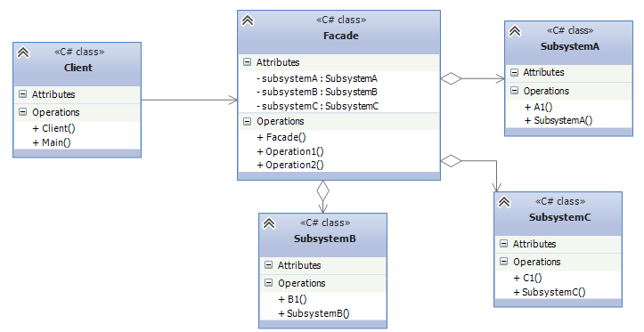

Фасад
Фасад (Facade) представляет шаблон проектирования, который позволяет скрыть сложность системы с помощью предоставления упрощенного интерфейса для взаимодействия с ней.
Когда использовать фасад?
- Когда имеется сложная система, и необходимо упростить с ней работу. Фасад позволит определить одну точку взаимодействия между клиентом и системой.
- Когда надо уменьшить количество зависимостей между клиентом и сложной системой. Фасадные объекты позволяют отделить, изолировать компоненты системы от клиента и развивать и работать с ними независимо.
- Когда нужно определить подсистемы компонентов в сложной системе. Создание фасадов для компонентов каждой отдельной подсистемы позволит упростить взаимодействие между ними и повысить их независимость друг от друга.
В UML общую схему фасада можно представить следующим образом:

Участники
- Классы SubsystemA, SubsystemB, SubsystemC и т.д. являются компонентами сложной подсистемы, с которыми должен взаимодействовать клиент
- Client взаимодействует с компонентами подсистемы
- Facade - непосредственно фасад, который предоставляет интерфейс клиенту для работы с компонентами
Рассмотрим применение паттерна в реальной задаче. Думаю, большинство программистов согласятся со мной, что писать в Visual Studio код одно удовольствие по сравнению с тем, как писался код ранее до появления интегрированных сред разработки. Мы просто пишем код, нажимаем на кнопку и все - приложение готово. В данном случае интегрированная среда разработки представляет собой фасад, который скрывает всю сложность процесса компиляции и запуска приложения. Теперь опишем этот фасад в программе на C#:
class Program
{
static void Main(string[] args)
{
TextEditor textEditor = new TextEditor();
Compiller compiller = new Compiller();
CLR clr = new CLR();
VisualStudioFacade ide = new VisualStudioFacade(textEditor, compiller, clr);
Programmer programmer = new Programmer();
programmer.CreateApplication(ide);
Console.Read();
}
}
// текстовый редактор
class TextEditor
{
public void CreateCode()
{
Console.WriteLine("Написание кода");
}
public void Save()
{
Console.WriteLine("Сохранение кода");
}
}
class Compiller
{
public void Compile()
{
Console.WriteLine("Компиляция приложения");
}
}
class CLR
{
public void Execute()
{
Console.WriteLine("Выполнение приложения");
}
public void Finish()
{
Console.WriteLine("Завершение работы приложения");
}
}
class VisualStudioFacade
{
TextEditor textEditor;
Compiller compiller;
CLR clr;
public VisualStudioFacade(TextEditor te, Compiller compil, CLR clr)
{
this.textEditor = te;
this.compiller = compil;
this.clr = clr;
}
public void Start()
{
textEditor.CreateCode();
textEditor.Save();
compiller.Compile();
clr.Execute();
}
public void Stop()
{
clr.Finish();
}
}
class Programmer
{
public void CreateApplication(VisualStudioFacade facade)
{
facade.Start();
facade.Stop();
}
}
В данном случае компонентами системы являются класс текстового редактора TextEditor, класс компилятора Compiller и класс общеязыковой среды выполнения CLR. Клиентом выступает класс программиста, фасадом - класс VisualStudioFacade, который через свои методы делегирует выполнение работы компонентам и их методам.
При этом надо учитывать, что клиент может при необходимости обращаться напрямую к компонентам, например, отдельно от других компонентов использовать текстовый редактор. Но в виду сложности процесса создания приложения лучше использовать фасад. Также это не единственный возможный фасад для работы с данными компонентами. При необходимости можно создавать альтернативные фасады также, как в реальной жизни мы можем использовать альтернативные среды разработки.
Created with the Personal Edition of HelpNDoc: Single source CHM, PDF, DOC and HTML Help creation